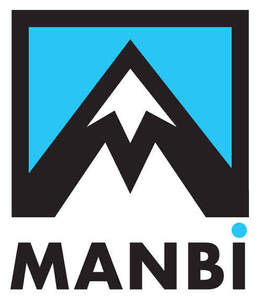

Trade Mark Journal No.2026/007 13 February 2026
UK00004287602 31 October 2025 (25)

- Class 25
- After ski boots; Après-ski boots; Apres-ski shoes; Articles of clothing; Articles of outer clothing; Articles of sports clothing; Articles of underclothing; Athletic clothing; Balaclavas; Bandanas; Bandanas [neckerchiefs]; Bandannas; Baselayer bottoms; Baselayer tops; Beanie hats; Beanies; Bobble hats; Boot cuffs; Boot uppers; Boots; Boots (Ski -); Boys' clothing; Caps [headwear]; Caps being headwear; Casual clothing; Childrens' clothing; Children's clothing; Children's footwear; Children's headwear; Children's outerclothing; Children's wear; Clothes; Clothes for sport; Clothes for sports; Clothing; Clothing for children; Clothing for men, women and children; Clothing for skiing; Clothing for sports; Cowls [clothing]; Down jackets; Ear muffs; Ear muffs [clothing]; Ear warmers; Earbands; Earmuffs; Fake fur hats; Fashion hats; Fleece jackets; Fleece pullovers; Fleece tops; Fleece vests; Fleeces; Footwear; Footwear (Non-slipping devices for -); Footwear for men; Footwear for men and women; Footwear for sport; Footwear for sports; Footwear for women; Footwear not for sports; Gilets; Girls' clothing; Gloves; Gloves [clothing]; Gloves as clothing; Gloves for apparel; Gloves with conductive fingertips that may be worn while using handheld electronic touch screen devices; Handwarmers [clothing]; Hats; Head bands; Head scarves; Head wear; Headbands; Headbands [clothing]; Headbands for clothing; Headgear; Headgear for wear; Headwear; Hooded pullovers; Hooded sweat shirts; Hooded sweatshirts; Hooded tops; Hoodies; Infant clothing; Infant wear; Infants' boots; Infants' clothing; Infants' footwear; Infantwear; Inner socks for footwear; Jackets; Jackets [clothing]; Jackets being sports clothing; Knit tops; Knitted caps; Knitted clothing; Knitted gloves; Knitted tops; Knitted underwear; Ladies' boots; Ladies' clothing; Ladies' footwear; Ladies' outerclothing; Ladies' underwear; Ladies wear; Leisure clothing; Leisure footwear; Leisure wear; Leisurewear; Long johns; Long sleeve pullovers; Long sleeved vests; Long-sleeved shirts; Men's and women's jackets, coats, trousers, vests; Men's clothing; Men's socks; Men's underwear; Menswear; Mittens; Mitts [clothing]; Mock turtleneck shirts; Mock turtleneck sweaters; Mock turtlenecks; Moisture-wicking sports pants; Moisture-wicking sports shirts; Neck tubes; Neckbands; Neckwear; Non-slipping devices for footwear; One-piece playsuits; One-piece suits; Outer clothing; Outerclothing; Outerclothing for boys; Outerclothing for girls; Outerclothing for men; Outerwear; Padded jackets; Padded pants for athletic use; Padded shorts for athletic use; Peaked caps; Peaked headwear; Polo knit tops; Polo neck jumpers; Polo shirts; Polo sweaters; Protective metal members for shoes and boots; Quilted jackets [clothing]; Rain boots; Ready-made clothing; Ready-to-wear clothing; Roll necks [clothing]; Salopettes; Shirts; Shoes for casual wear; Shoes for leisurewear; Ski and snowboard shoes and parts thereof; Ski balaclavas; Ski boot bags; Ski boots; Ski gloves; Ski hats; Ski jackets; Ski pants; Ski suits; Ski trousers; Ski wear; Skiing shoes; Snow boots; Snow pants; Snow suits; Snowboard boots; Snowboard gloves; Snowboard jackets; Snowboard mittens; Snowboard shoes; Snowboard trousers; Snowsuits; Socks; Socks and stockings; Socks for infants and toddlers; Socks for men; Sport shoes; Sports clothing; Sports clothing [other than golf gloves]; Sports footwear; Sports garments; Sports headgear [other than helmets]; Sports jackets; Sports jerseys; Sports pants; Sports shirts; Sports socks; Sports vests; Sports wear; Sportswear; Thermal clothing; Thermal headgear; Thermal socks; Thermal underwear; Thermally insulated clothing; T-shirts; Turtleneck pullovers; Turtleneck shirts; Turtleneck sweaters; Turtleneck tops; Turtlenecks; Underclothes; Underclothing; Underclothing (Anti-sweat -); Underclothing for women; Undergarments; Undershirts; Underwear; Underwear (Anti-sweat -); Underwear for women; Vest tops; Weatherproof clothing; Weatherproof jackets; Weatherproof pants; Winter boots; Winter coats; Winter gloves; Women's clothing; Womens' outerclothing; Womens' underclothing; Womens' undergarments; Women's underwear; Woollen socks; Woolly hats; Wrist warmers.
Manbi Active Brands Ltd